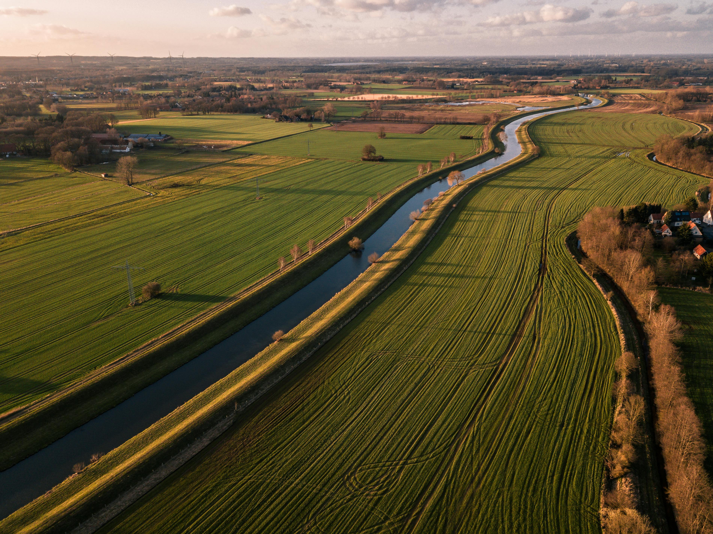

We are catalysts for change, cultivating a sustainable future for agriculture.

0
Farmers Empowered
0
Data Points Analyzed
0%
Disease Detection Accuracy
Our Journey
Meet the Innovators

Dr. Anya Sharma
Founder & Chief Agronomist
Anya brings 20 years of field experience, bridging the gap between soil science and our technology.

Rohan Gupta
Lead Data Scientist
Rohan is the architect of our AI engine, translating complex environmental data into actionable insights for farmers.

Priya Singh
Head of Engineering
Priya leads our development team, ensuring our platform is robust, scalable, and easy to use for everyone.
Join Our Mission
Become a part of a growing community of forward-thinking farmers. Let's cultivate a smarter, more sustainable future together.
Get Started for Free